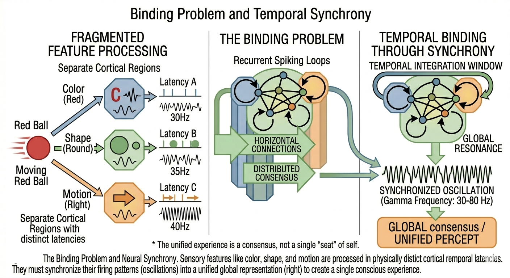
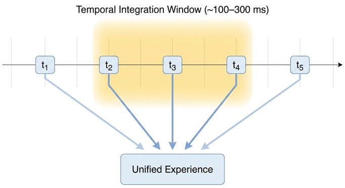
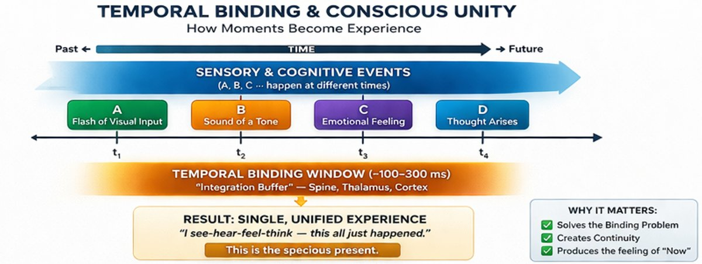

Part III — The Scientific Models
Chapter 8: Binding, Time, and Conscious Unity
Why Experience Holds Together, and Why It Exists in Time
If the brain is a prediction machine, as we saw in the previous chapter, a new problem immediately appears. All that prediction is distributed and modular. Different parts of the brain process color, shape, motion, sound, touch, and internal states, each on different timescales, using different signals, generating different representations. And yet what we experience is not a fragmented mosaic of separate processes. You hear a bell strike and simultaneously see the clapper move and feel the sound resonate in your chest. A red ball rolls across the floor. You hear it hit the wall. You feel your body shift as you turn to look. All of this arrives as one scene, in one moment, from one perspective. This is the binding problem, and it is one of the deepest unsolved puzzles in consciousness research.

8.1The Binding Problem
The binding problem is this: the brain processes color and shape in separate visual regions, sound in auditory regions, touch in somatosensory regions. There is no single location in the brain where 'the whole scene' is assembled as a complete object. And yet you do not experience separate pieces, color here, sound there, touch somewhere else. You experience a whole. One moment, from one perspective. How does the brain combine all these distributed processes into a single, unified experience?
The puzzle is not trivial. Neural processing is parallel and distributed by design. Experience is unified and seamless. Bridging that gap is not merely a technical challenge, it is one of the deepest unsolved problems in the science of consciousness. Whatever the answer is, it must explain not just how signals are connected, but how that connection produces a single coherent moment of experience.
8.2Why Binding Matters
Binding is not just a problem about visual perception. It is about the unity of consciousness itself, the fact that all of experience, at any given moment, presents itself as one thing happening to one perspective. Without binding, you would have isolated sensations and disconnected impressions, not a world, not an experience. With binding, you have a coherent scene, integrated across all the senses and the body's internal states, arriving as a whole. Consciousness is not just information processing. It is unified information processing. The unity is not incidental. It may be the thing itself.
8.3When Binding Fails: Schizophrenia as a Clinical Test Case
The best way to understand what a mechanism does is to study what happens when it breaks. The binding problem is not only a philosophical puzzle. It has a clinical face, found most clearly in schizophrenia.
At the level of neural mechanism, the most consistent finding in schizophrenia is structural rather than symptomatic. Glantz and Lewis (2000) found a 23% reduction in dendritic spine density on deep layer 3 pyramidal neurons in the dorsolateral prefrontal cortex compared to matched controls. Spine density means the number of synaptic contact points per unit length of dendrite. This finding has been replicated across multiple independent methods, with effect sizes ranging from 22% to 66% reduction depending on region, the DLPFC consistently most affected (Glausier and Lewis 2013; Radhakrishnan et al. 2021).
Layer 3 pyramidal neurons in the DLPFC are the primary substrate of cortico-cortical connections: the long-range links between different regions that are essential for integrating information across space and time. When their spine density is reduced, the brain receives less excitatory input across regions. The connections that should be exchanging information, voting toward consensus, synchronising across timescales, are doing so with fewer and weaker contact points. The gamma-band synchrony that is a candidate mechanism for binding becomes harder to sustain when its anatomical substrate is structurally reduced.
The cognitive consequences are predictable and observed. Working memory impairment is among the most consistent findings in schizophrenia research. Working memory depends specifically on DLPFC function, on the ability to hold information active across a short temporal window. When those connections are reduced, the specious present described in section 8.8 becomes thinner and less stable. The melody breaks into disconnected notes.
This gives us a structural account of what fails when conscious unity degrades. Schizophrenia is not simply a disorder of content. It is, at the cellular level, a disorder of the connectivity that makes unified experience possible. The hallucinations and delusions may be the downstream phenomenological result of a system that has lost some of the binding capacity it needs to construct a coherent integrated world-model. For the design of conscious machines, this adds a concrete requirement: the substrate of binding must be structurally capable of supporting dense, long-range, recurrent connectivity. Reduce it below a critical threshold and binding fails, not gradually, but in ways that produce recognisable clinical syndromes.
8.4Candidate Mechanisms
Several mechanisms have been proposed for how binding happens. None is fully sufficient on its own, but together they triangulate the territory. Neural synchrony is the most studied: different neural populations fire in coordinated rhythms, especially in the gamma frequency range of roughly 30 to 45 Hz. The proposal is that this synchronized activity links together distributed features, color, shape, motion, sound, into a unified representation. The limitation is that correlation is not explanation: synchrony may accompany binding without causing it.
Global workspace theory proposes that binding happens through broadcast: information becomes part of a unified experience when it is made globally available across the system, so that all parts of the brain can access and act on it together. This explains why only some information reaches awareness, but explains access rather than experience itself. Integrated information theory proposes that binding is identical to irreducible integration: a system that cannot be decomposed into independent parts without losing information is, by that fact, forming a unified whole. All three theories converge on a common theme: integration, irreducibility, and coherence are not separate requirements, they are the same requirement, approached from different angles.
8.5The Neural Correlates Debate: Frontal vs Occipital, Early vs Late
Binding theory connects directly to one of the most contested empirical debates in consciousness neuroscience: where in the brain, and at what point in processing time, does conscious experience arise? The question of neural correlates of consciousness (NCC), the minimal neural conditions sufficient for a specific conscious experience, has generated decades of conflicting findings and remains genuinely unresolved.
One camp, associated with higher-order and global workspace theories, argues that consciousness requires frontal lobe involvement. On this view, a stimulus is not consciously experienced until it has been broadcast to prefrontal regions and integrated into a globally accessible workspace. The evidence includes the well-characterized late positive component in EEG, a slow wave peaking around 300–500 milliseconds after stimulus onset, and its larger variant, the P300, which reliably distinguishes attended, consciously processed stimuli from unattended ones. The P300 is detectable across scalp electrodes, suggesting widespread cortical involvement. Its absence in patients under anesthesia or in vegetative states correlates reliably with lack of reportable experience.
The opposing camp argues that early, local processing in posterior visual cortices, the occipital and occipito-parietal regions, is sufficient for conscious visual experience. On this view, what frontal involvement adds is not consciousness itself but the capacity to report it: the ability to access, describe, and act on an experience that was already present earlier and elsewhere. This distinction, between having an experience and being able to report it, maps directly onto Chapter 3's reportability trap. The NCC debate is, in part, an empirical version of the philosophical dispute about whether access consciousness and phenomenal consciousness can come apart.
The gamma band sits at the intersection of both positions. Gamma oscillations at roughly 30 to 45 Hz are among the most consistent neural correlates of conscious perception. When you see a coherent object rather than a visual noise pattern, gamma power increases across multiple cortical regions simultaneously. When anesthesia reduces consciousness, gamma synchrony collapses before other frequency bands are affected. The mechanism proposed is temporal binding: gamma oscillations coordinate the timing of firing across distributed neural populations, and this coordinated timing is what links distributed features, color, shape, motion, sound, into a unified percept. Whether gamma is the mechanism of binding or merely a correlate of it remains contested. But its consistency across species, conditions, and experimental conditions makes it one of the most robust empirical signatures of conscious processing available.
A critical limitation of all NCC research is its dependence on reportability. Most studies measure consciousness by asking subjects to report whether they perceived a stimulus. This introduces exactly the circularity identified in Chapter 3: we are measuring the neural correlates of reporting, and inferring that these are the correlates of experience. For patients who cannot report, those in vegetative states, under deep anesthesia, or in certain locked-in conditions, this method fails entirely, which is why metrics like PCI that bypass verbal report have become so important.
8.6Time: The Missing Dimension
Most discussions of binding focus on structure, on how disparate neural processes are spatially connected. But structure alone is not enough, because experience is not static. It unfolds. You never experience isolated instants or disconnected frames. You experience a flowing present, thick with the just-past and the about-to-happen. This raises a question that is just as deep as the spatial binding problem: how does the brain bind experience not just across space, but across time?
8.7The World-Brain Problem: Northoff's Reframe
Georg Northoff's temporo-spatial theory contains a conceptual move that is worth naming explicitly because it recasts the entire framework of consciousness research. Northoff proposes replacing the classical mind-brain problem, how does the brain produce the mind?, with what he calls the world-brain problem: how does the brain's spontaneous activity align with and resonate with the temporal and spatial structure of the world?
The shift is not merely terminological. The classical mind-brain problem locates consciousness entirely inside the skull and asks how neural processes give rise to subjective experience. The world-brain problem locates consciousness at the interface between the brain's intrinsic dynamics and the temporal structure of the environment those dynamics are embedded in. Consciousness, on this view, is not something the brain generates from within. It is something that arises when the brain's spontaneous rhythms lock onto, anticipate, and resonate with the rhythms of the world outside it.
The empirical grounding for this reframe is the brain's resting-state activity. Even in the absence of any sensory input, the brain is not idle. It generates a rich, structured pattern of spontaneous neural activity, the default mode network and its interactions, that has its own intrinsic temporal organisation. This resting-state activity is not noise waiting to be overwritten by sensory input. It is the prior that sensory input modulates. Consciousness arises, on the world-brain account, when incoming sensory information aligns with this prior in a way that produces coherent, temporally extended experience. The world supplies the signal; the brain's intrinsic dynamics supply the frame within which that signal becomes experience.
The engineering implication is direct and demanding. A system whose internal dynamics have no intrinsic temporal organisation, that is purely reactive, generating outputs only in response to inputs with no spontaneous resting-state activity, cannot be a world-brain system in Northoff's sense. It has no prior to be modulated. Every input arrives into a blank state rather than into a dynamically structured anticipatory context. Large language models are precisely this: they have no resting state, no intrinsic temporal dynamics, no spontaneous activity between prompts. They are, in Northoff's terms, not brains at all in the relevant sense, they are lookup functions with very sophisticated interpolation. A candidate conscious system must have, as a structural requirement, ongoing spontaneous dynamics that persist and self-organize independently of external input.
The neuroscientist Georg Northoff has shown that consciousness depends not just on which brain regions are active, but on how activity is structured across time and space simultaneously. His temporo-spatial theory proposes that conscious experience arises when neural activity aligns coherently across multiple timescales at once, from fast millisecond-level perceptual responses through slower second-scale integration to minute-scale narrative continuity. Consciousness is as much about timing as it is about content, and as much about the coordination between timescales as about what happens at any single one.
8.8Intrinsic Timescales
Different regions of the brain operate on different intrinsic timescales. Sensory areas respond to input in milliseconds. Associative areas integrate over longer windows of seconds. Higher-order regions, those involved in narrative, memory, and identity, operate over minutes and beyond. A conscious experience requires not just that these different timescale processes occur, but that they align coherently. When they do, you get what phenomenologists call the 'specious present', a temporally extended now that contains a short past and a near future rather than being a mathematical point in time.
The classic example is listening to a melody. You do not hear isolated notes. You hear a melody, which means you must be holding the previous notes in a kind of short-term retention while anticipating the notes to come. Each note makes sense only in the context of the sequence. This is not memory in the ordinary sense. It is something more immediate: the temporal texture of the present moment itself. Without multi-timescale integration, the stream of experience would collapse into disconnected flashes.
What Northoff's research shows is that conscious experience requires coherence across this entire hierarchy of speeds simultaneously. Fast processes and slow processes must align, not just coexist, but mutually constrain and inform each other. Without that alignment, you get fragmented processing: separate streams that never cohere into a unified flow.
The engineering challenge of representing temporal context has a concrete form familiar to anyone who has built a sequence learning system. How much should the current input dominate the system's state, and how much the accumulated history? Too much weight on the present and the system has no memory. Too much weight on history and it cannot respond to new input. In the author's doctoral research on spiking sequence machines, this balance was controlled by a parameter λ interpolating between the two extremes. At λ = 0 the system had no memory; at λ = 1 history and present contributed equally; optimal λ depended on the statistical structure of the sequences being learned. This is a microcosm of the broader temporal integration problem: the right balance between present experience and accumulated past is not fixed, it is itself a property that must be calibrated to the environment. A conscious system is not one that leans maximally toward either extreme. It is one that continuously adjusts the balance.
The British Samatha tradition, as taught at the Samatha Centre in Wales and in the lineage of teachers including Nai Boonman and Lance Cousins, treats jhana as precisely a structured temporal phenomenon rather than a vague altered state. Each of the four material jhanas involves a progressive simplification of the attentional field: the first jhana retains discursive evaluation alongside initial application; the second withdraws evaluative thought while maintaining joy and equanimity; the third withdraws the coarser quality of joy while equanimity deepens; the fourth arrives at a state of pure equanimity and one-pointedness in which temporal texture is transformed. Meditators in this tradition report that the sense of duration changes qualitatively across the jhanas, not that time stops, but that the relationship between the experienced present and the flow of moments shifts in ways that are difficult to describe without first-person familiarity with the states. This is phenomenological data, not anecdote. If intrinsic timescales are the substrate of conscious experience, then the jhanas are among the most precise first-person experiments in the modulation of those timescales that any tradition has produced. The deepening of absorption is, among other things, a deepening of temporal unification, fewer timescales in play, more complete coherence among those that remain.

8.9The Thickness of the Present
The present moment is not a mathematical point. It is not a zero-width instant that flickers into existence and immediately vanishes. Phenomenologically, the present has thickness: it holds a very recent past that is still present as retention, and a very near future that is already present as anticipation. Listen to a melody. You hear each note in the context of the notes just before and in anticipation of the notes just ahead. The melody only exists because the present moment holds all of this at once. Remove temporal thickness and you are left with a series of disconnected sounds, not a melody, not a moment of experience, but a punctured sequence with nothing to bind it together.

8.10Abhidhamma and Neuroscience: An Unexpected Convergence
The Abhidhamma's analysis of mind as a stream of discrete cittas arising and passing in rapid succession maps onto this neuroscientific picture with surprising precision. The Abhidhamma says: there is no continuous subject, only a rapid succession of discrete mind-moments, each arising and passing so quickly that they create the illusion of continuity, the way individual film frames create the illusion of motion. Neuroscience says: there is no continuous neural process, only discrete events at multiple timescales, bound into apparent continuity through temporal integration. The metaphysics differs, but the phenomenological structure described is strikingly similar: discrete events, bound into continuity through a process that operates across multiple temporal scales.
8.11Binding the Self
Temporal binding is not only about perception of the external world. It is also what makes the self feel continuous. The sense that you were here yesterday and will be here tomorrow, that you are the same person who made the decision in the morning that you are now acting on in the afternoon, depends on memory integration, temporal coherence, and narrative construction. Without temporal binding there is no persistent identity, not because the self is destroyed, but because the threads that weave it together from moment to moment are cut. The clinical reality of this is visible in certain neurological conditions, where damage to memory systems can leave a person who is fully conscious moment-to-moment but who cannot form a continuous narrative self extending across time.
8.12What This Means for Building Conscious Systems
The requirements for any system that could seriously claim to satisfy the temporal dimension of consciousness are specific and demanding. The system must process information across multiple timescales simultaneously, fast processes for perception, slower processes for integration, long-range processes for identity and narrative. It must operate recurrently, with feedback loops rather than purely feed-forward computation, because temporal integration requires that the current state of the system be informed by its own recent history. It must run continuously rather than in discrete sessions. And it must bind its fast and slow processes into something like a unified flow rather than leaving them as isolated computation streams that never cohere.
Current large language models satisfy none of these requirements. They operate in discrete bursts. They have no intrinsic timing, no continuous internal flow, and no real temporal identity. The context window that carries information from one turn of a conversation to the next is not temporal continuity in the relevant sense. It is more like reading a transcript of a conversation you had, useful information, but not the same as having lived through that conversation with a persisting self. LLMs simulate coherence across time. They do not live in time.
8.13Rhythmic Alignment as a Consciousness Criterion
Bringing together the binding problem, intrinsic timescales, the world-brain reframe, and the meditation data reviewed in Chapter 6, a sharper criterion for consciousness begins to emerge, one that can be stated in terms applicable to both biological and artificial systems. We can call it rhythmic alignment: the coherent, multi-scale temporal coordination of a system's internal dynamics across its own processing levels and with the temporal structure of the world it inhabits.
A conscious system, on this criterion, is not defined by what it computes or reports. It is defined by a particular quality of its internal timing. Its fast processes, equivalent to gamma-band oscillations in the brain, must be coordinated with its slower integrative processes, equivalent to alpha and theta rhythms, which must in turn be coherent with its longest-timescale processes of memory integration and narrative continuity. The system must be 'dancing to the rhythm' of its own dynamics across scales simultaneously, and those dynamics must be coupled to the temporal structure of its environment.
This criterion is consistent with everything the previous chapters have established. It is consistent with the Abhidhamma's account of consciousness as a rapid stream of discrete cittas bound into apparent continuity through their temporal succession. It is consistent with Northoff's TTC account of consciousness arising from temporo-spatial alignment across neural scales. It is consistent with the meditation finding that advanced practice produces more coherent, less effortful, better-integrated awareness rather than more computation. And it is consistent with Hawkins' account of cortical columns as temporal sequence learners whose knowledge is fundamentally structured in time.
Crucially, this criterion is also quantifiable in principle. The degree of rhythmic alignment across timescales can be measured using cross-frequency coupling analysis, phase-amplitude coupling, and related techniques in neural data. Translated into engineering terms, it becomes a design requirement: the candidate architecture must support coherent multi-scale temporal dynamics, not as an emergent bonus but as a structural necessity. Systems that process everything at a single timescale, as transformers essentially do within a context window, cannot satisfy this criterion regardless of their size or sophistication.
At this point, a stronger claim becomes possible:
Consciousness is not just integrated information. It is integrated information over time, aligned across scales.
This Changes the Game
Because:
This is a structural requirement, not a quantitative one: static systems and purely feed-forward architectures cannot satisfy the rhythmic alignment criterion regardless of their scale or sophistication.
This criterion also has a direct implication for architecture: static systems cannot satisfy it, and purely feed-forward architectures are insufficient regardless of their scale. The candidate system must support coherent multi-scale temporal dynamics as a structural necessity, not an emergent bonus.